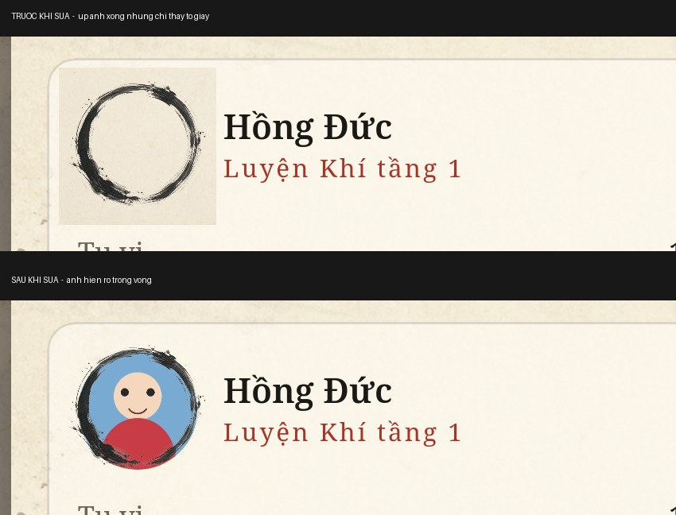
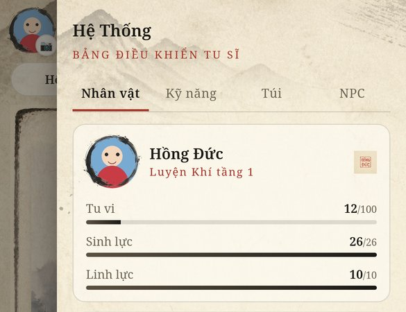

Đã up được ảnh đại diện
Bản chạy thật trên GitHub Pages · đo bằng Safari (WebKit) ở khổ iPhone 13
Anh báo up ảnh vô không được. Tôi tái hiện được đúng lỗi đó, và lỗi
không phải một mà là ba chỗ khác nhau cộng lại. Giờ cả ba đã sửa xong.
Nếu anh chỉ muốn thử ngay: mở game, vào tab Nhân vật,
chạm vào vòng tròn ảnh đại diện → chọn ảnh từ thư viện. Ảnh hiện ra ngay
và còn nguyên sau khi tải lại trang.
Ba lỗi, không phải một
- 1Vòng trang trí che kín ảnh (nặng nhất)
Ảnh vòng
avatar-ring.png nằm đè lên ảnh đại diện, mà nó
đục 100% — không có một điểm trong suốt nào. Nên ảnh anh up
vào được thật, nhưng bị tờ giấy kem che mất, nhìn như không up được.
Đo: 0% pixel trong suốt trên 512×512. Sau khi sửa:
85,6% trong suốt, giữa vòng alpha = 0.
- 2Chạm vào ảnh trong tab Nhân vật không có phản ứng
Chỗ dễ thấy nhất lại không bấm được: nó chỉ là ảnh, không có nút, không có
ô chọn tệp, không có lệnh bấm nào. Trước đây chỉ up được qua ảnh nhỏ trên
thanh trên cùng hoặc nút nằm sâu trong hộp Cài đặt.
Sau khi sửa: chạm vào là mở hộp chọn ảnh.
- 3Lưu thất bại thì im lặng
Khi bộ nhớ trình duyệt đầy (ảnh điện thoại thường rất nặng), ảnh hiện được
lúc đó nhưng mất khi tải lại trang — và không có câu nào báo cho anh biết.
Sau khi sửa: hiện dòng chữ đỏ giải thích, và ảnh được nén
nhỏ dần để vừa bộ nhớ.
Trước và sau

Cùng một ảnh, cùng một thao tác. Trên: ảnh đã up nhưng chỉ thấy tờ giấy.
Dưới: ảnh hiện rõ trong vòng.
Đo được, không phải cảm nhận: đếm điểm ảnh mang màu của bức ảnh vừa up
trong vùng ảnh đại diện — trước khi sửa 0/648,
sau khi sửa 158/648.
Còn nguyên sau khi tải lại

Tải lại trang xong, ảnh đại diện vẫn còn — tức là đã lưu thật,
không chỉ hiện tạm.
Đã kiểm những gì
- Chạy trên Safari thật (WebKit), giả lập iPhone 13 và iPad Pro, cảm ứng thật —
không phải bấm chuột trên máy tính.
- Up ảnh xong: cả ảnh ở tab Nhân vật và ảnh nhỏ trên thanh trên cùng đều đổi theo.
- Ảnh chụp màn hình trước/sau khác nhau thật (trước khi sửa thì giống hệt nhau
— dấu hiệu ảnh không hề đổi).
- Nút Xoá ảnh vẫn đúng: cả hai chỗ trở về ảnh mặc định.
- Bộ kiểm thử của game: 124 đạt và
161 đạt, 0 hỏng.
Vào game thử ngay
Cách thử: mở game → tab Nhân vật → chạm vòng tròn ảnh đại diện →
chọn ảnh trong thư viện. Nếu máy báo ảnh quá lớn, chọn ảnh nhỏ hơn
hoặc chụp lại ở chế độ thường.